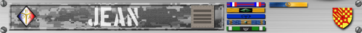
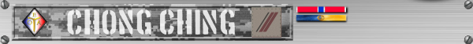
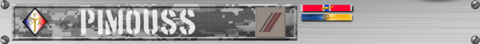
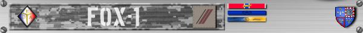
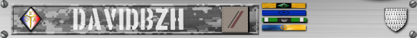

Jean

Etat Major
Notre commandant bien aimé, nul ne sait si la terre a vu un jour un
chef si compétant, fort, et surtout si modeste ! Aussi habile avec
un AT4 qu'avec la console admin, soyez assuré que Jean fera toujours
coup au but. L'esprit de corps étant pour lui une seconde nature, il
assure la cohésion du groupe dans toutes les circonstances !
Gloire à Jean ! Gloire à Jean !
Gloire à Jean ! Gloire à Jean ! Gloire à Jean !
Gloire à Jean !
Madball01

Etat Major
Passionné de choucroute, Mad est le deuxième membre de l'Etat Major.
Son gout pour le lead et
Eagle Red

Etat Major
Trésorier de la team, ce qu’il fait de nos cotise reste un sujet on
ne peut plus opaque et, de surcroît tabou. D’aucun dirait qu’elles
s’évaporent en présence de femme de petite vertu, mais nul n’as
jamais été en mesure de le prouver, le mystère reste entier.
Champion régional de Teamviewer (en tant que co-pilote), il partage
le titre avec notre bien aimé commandant, Jean
Gloire à Jean !
Gloire à Jean !
Son ascension fulgurante a malheureusement connu un coup d’arrêt
brutal avec la sortie de Arma Reforger et sa gestion automatisée des
mods
Troisième et dernier membre de l’Etat-major, Eagle est toujours
bienveillant à l’égard de quiconque est à jour de sa cotise. Il nous
gratifie de sa présence, du moins, jusqu’au jour où il aura amassé
assez de pognon pour nous dire d’aller nous faire ****
Clem

Lorsque BI a décidé de développer ArmA III, ils ont d’abord appelé
Clem pour savoir comment faire des missions !
Mission maker en chef de la team, Clem a suscité des vocations au
sein du groupe, puisqu’il a déjà transmis son savoir-faire et sa
passion pour le .sqf à la moitié de l’équipe.
Facilement reconnaissable avec sa MG et son casque Camo, Clem a
toujours un script de derrière les fagots pour réaliser tel ou tel
action dans l’éditeur.
BlackWolf

Deuxième membre le plus riche de l’équipe (après Eagle), banquier de
Formation, pince-sans-rire par passion, Black déteste TOUS les mods
obligatoires. Mais son amour du jeu et de ses frères d’armes l’aide
à oublier à quel point le CUP weapon est éclaté au sol, et au final,
on passe de bons moments ensemble ! C’est tout ce qui compte !
Black respecte les règles et aime qu’on les respectes, alors fillez
droit si vous ne voulais pas avoir affaire à lui !
Rick_Hunter2

Chef d’orchestre des serveurs OTEA, Rick a trois passions dans la
vie, Arma, les toits et les ronds-points.
Quand il ne fait pas
la guerre ingame, il s’assure que nos forces armées sont dotées des
ressources nécessaires pour mener à bien leur mission. Sans jamais
avoir été marin, il passe la moitié de son temps sur des navires de
la marine nationale ! Quel pied !
Giorbev

Après avoir suivi une formation intense à l’école des démineurs
sénégalais de Dakar, Giorbev intègre les rangs des gardiens de la
paix, au sein desquels il exerce son amour du prochain à chaque
sortie. Sa foi inébranlable en l’humanité lui permet de garder
espoir dans la guerre contre les forces du mal !
Giorbev est
victime du syndrome de la présence incertaine, mais les soirées
qu’il rate sont finalement assez rares, pour le plus grand plaisir
des membres OTEA ! Il faut aussi reconnaitre à Giorbev un courage
inégalé, étant le seul membre à s’être frotté à l’éditeur impinable
de Reforger ! Rien que pour ça, médaille !
Chong Ching

Pfffff, que dire …..
...Vérifiez
vos poches en sortant !
Pimouss

Pimouss s’envoi en l’air dès qu’il le peut, avec son zinc acheté à
crédit (avec un très mauvais taux, c’est Black qui le lui a vendu).
Quand ce n’est pas dans les airs, c’est au commande d’un helico sur
notre belle domination publique qu’il sévie ! Pimouss arrive
toujours pile poil en retard mais c’est pour ça qu’on l’aime ! C’est
qu’il faut le remplir le ver de whisky, et il va pas se vider seul !
Ça prend du temps le travail bien fait ! Plus sérieusement, Pimouss
nous donne souvent de bon conseils quand il s’agit de leader, grâce
à son expérience passée, toute la team apprends beaucoup de sa
première vie !
Fox-1

Fox est interdit de conduire ou piloter tout ce qui dispose d’un
moteur, quel qu’il soit, ingame. Des générations de traumatisés et
des milliers d’heures de psychanalyse non remboursées par la sécu
nous ont forcé à prendre cette difficile et douloureuse décision.
Mais fallait voir voler l’engin (pas longtemps certes) ! Un
véritable danger public. Fox, au même titre que Pimouss nous en
apprend beaucoup sur les règles militaires. Ha et si il devait y
avoir un accident atomique majeur en France, ne cherchez pas, on
sait qui c’est !
Adri3n

Doté d’une aura légendaire, Adri3n est plein de qualités, sa plus
grande étant sans doute son humilité et sa modestie. Il est en
grande partie responsable de ce que vous venez de lire jusqu’à
présent, vous pouvez le remercier en lui envoyant un ou deux BTC
(adresse en MP)…
Mise à part son pseudo pourri, il n’a pas
beaucoup de défauts. Et comme il aime à dire, « Dans la vie il y a
trois sortes de personnes, ceux qui savent compter, et ceux qui ne
savent pas ! »
Davidbzh

Davidbzh sévie dans la sphère sans pitié du recèle de chaussure
depuis de nombreuses années.
Avec sa femme, il tient le plus
grand trafique de babouche international de l'hexagone, babouches
qu’il essaye quotidiennement et systématiquement lors des parties
OTEA du vendredi ! Vous êtes prévenus !
-mj-

Le petit MJ est le dernier à avoir intégré les rangs de l’équipe
OTEA. Véritable encyclopédie vivante des mods Arma, il est
constamment en train de se la comparé avec Clem, pour savoir qui
c’est qui a la plus grosse …
... collection de mods Arma bien sûr ! MJ
est un camarade discret mais qui a su apporter un vent de fraicheur au sein
de l’équipe. Et vue l’odeur qu'il y régnait, il était temps !